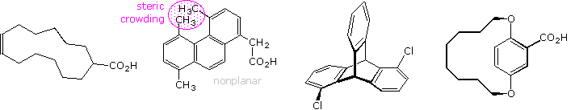

1. The following compounds exist as pairs of stereoisomers. Evaluate whether the structure is chiral or achiral and, if chiral, denote its nature (center, axis or plane). Select a compound by clicking the button beneath its structure, and then check the appropriate buttons regarding chirality.

A Is the selected compound: Chiral or Achiral
B If the compound is chiral, classify it as: Center Axial Planar